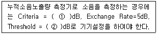
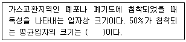
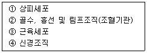
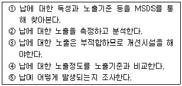
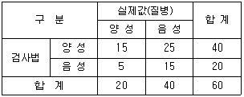
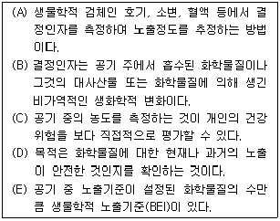

산업위생관리기사 (2013-06-02 기출문제)
1과목: 산업위생학개론
1. 다음 중 NIOSH의 권고중량한계(Recommended Weight Limit, RWL)에 사용되는 승수(multiplier)가 아닌 것은?
- 들기거리(Lift Multiplier)
- 이동거리(Distance Multiplier)
- 수평거리(Horizontal Multiplier)
- 비대칭각도(Asymmetry Multiplier)
(정답률: 76%)

2. 구리(Cu)의 공기 중 농도가 0.⑤mg/m3이다. 작업자의 노출시간은 8시간이며, 폐환기율은 1.25m3/h, 체내 잔류율은 1이라고 할 때, 체내 흡수량은?
- 0.1mg
- 0.2mg
- 0.5mg
- 0.8mg
(정답률: 77%)
3. 도수율(Frequency Rate of Injury)이 10인 사업장에서 작업자가 평생동안 작업할 경우 발생할 수 있는 재해의 건수는? (단, 평생의 총근로시간수는 120000시간으로 한다.)
- 0.8건
- 1.2건
- 2.4건
- 10건
(정답률: 85%)
4. 다음 중 근육운동에 동원되는 주요 에너지원 중에서 가장 먼저 소비되는 에너지원은?
- CP
- ATP
- 포도당
- 글리코겐
(정답률: 72%)
5. 다음 중 피로에 관한 설명으로 틀린 것은?
- 자율신경계의 조절기능이 주간은 부교감신경, 야간은 교감신경의 긴장 강화로 주간 수면은 야간 수면에 비해 효과가 떨어진다.
- 충분한 영양을 취하는 것은 휴식과 더불어 피로방지의 중요한 방법이다.
- 피로의 주관적 측정방법으로는 CMI(Control Medical Index)를 이용한다.
- 피로현상은 개인차가 심하여 작업에 대한 개체의 반응을 어디서부터 피로현상이라고 타각적 수치로 찾아내기는 어렵다.
(정답률: 74%)
6. 다음 중 RMR이 10인 격심한 작업을 하는 근로자의 실동률과 계속잡업의 한계시간으로 옳은 것은? (단, 실동률은 사이또 오시마식을 적용한다.)
- 실동률 : 55%, 계속작업의 한계시간 : 약 5분
- 실동률 : 45%, 계속작업의 한계시간 : 약 4분
- 실동률 : 35%, 계속작업의 한계시간 : 약 3분
- 실동률 : 25%, 계속작업의 한계시간 : 약 2분
(정답률: 63%)
7. 다음 중 유해인자와 그로 인하여 발생되는 직업병이 잘못 연결된 것은?
- 크롬 – 폐암
- 망간 – 신장염
- 이상기압 – 폐수종
- 악성중피종 – 수은
(정답률: 83%)
8. 우리나라의 규정상 하루에 25kg 이상의 물체를 몇 회 이상 드는 작업일 경우 근골격계 부담작업으로 분류하는가?
- 2회
- 5회
- 10회
- 25회
(정답률: 80%)
9. 실내공기오염물질 중 석면에 대한 일반적인 설명으로 거리가 먼 것은?
- 석면의 여러 종류 중 건강에 가장 치명적인 영향을 미치는 것은 사문석 계열의 청석면이다.
- 과거 내열성, 단열성, 절연성 및 견인력 등의 뛰어난 특성 때문에 여러 분야에서 사용되었다.
- 석면의 발암성 정보물질의 표기는 1A에 해당한다.
- 작업환경측정에서 석면은 길이가 5μm보다 크고, 길이 대 넓이의 비가 3 : 1 이상인 섬유만 개수한다.
(정답률: 79%)
10. 다음 중 영양소의 작용과 그 작용에 관여하는 주된 영양소의 종류를 잘못 연결한 것은?
- 체내에서 산화 연소하여 에너지를 공급하는 것 → 탄수화물, 지방질 및 단백질
- 몸의 구성성분을 보급하고 영양소의 체내 흡수기능을 조절하는 것 → 탄수화물, 유기질, 물
- 체내조직을 구성하고, 분해 소비되는 물질의 공급원이 되는 것 → 단백질, 무기질, 물
- 여러 영양소의 영양적 작용의 매개가 되고 생활기능을 조절하는 것 → 비타민, 무기질, 물
(정답률: 65%)
11. 다음 중 산업위생 관련 기관의 약자와 명칭이 잘못 연결된 것은?
- ACGIH : 미국산업위생협회
- OSHA : 산업안전보건청(미국)
- NIOSH : 국립산업안전보건연구원(미국)
- IARC : 국제암연구소
(정답률: 66%)
12. 다음 중 산업안전보건법상 고용노동부장관에 의한 보건관리 대행기관의 지정 취소 및 업무정지에 관한 설명으로 틀린 것은?
- 고용노동부장관은 업무정지 기간 중에 업무를 수행한 경우 그 지정을 취소하여야 한다.
- 고용노동부장관은 거짓이나 그 밖의 부정한 방법으로 지정을 받은 경우 그 지정을 취소하여야 한다.
- 지정이 취소된 자는 지정이 취소된 날부터 1년 이내에는 안전관리대행기관으로 지정받을 수 없다.
- 고용노동부장관은 지정받은 사항을 위반하여 업무를 수행한 경우 6개월 이내의 기간을 정하여 그 업무의 정지를 명할 수 있다.
(정답률: 69%)
13. 미국산업위생학술원(AAIH)이 채택한 윤리강령 중 산업위생전문가로서 지켜야 할 책임과 가장 거리가 먼 것은?
- 기업체의 기밀은 외부에 누설하지 않는다.
- 과학적 방법의 적용과 자료의 해석에서 객관성을 유지한다.
- 근로자, 사회 및 전문 직종의 이익을 위해 과학적 지식을 공개하고 발표한다.
- 전문적 판단이 타협에 의하여 좌우될 수 있는 상황에 개입하여 객관적 자료에 의해 판단한다.
(정답률: 85%)
14. 다음 중 직업성 변이(Occupational stigmata)에 관한 설명으로 가장 옳은 것은?
- 직업에 따라 체온량의 변화가 일어나는 것이다.
- 직업에 따라 체지방량의 변화가 일어나는 것이다.
- 직업에 따라 신체 활동량의 변화가 일어나는 것이다.
- 직업에 따라 신체 형태와 기능에 국소적 변화가 일어나는 것이다.
(정답률: 83%)
15. 산업안전보건법령상 사업주가 근로자의 건강장해 예방을 위하여 작업시간 중 적정한 휴식을 주어야 하는 고열, 한랭 또는 다습한 옥내 작업장에 해당하지 않는 것은? (단, 기타 고용노동부장관이 별도로 인정하는 장소는 제외한다.)
- 녹인 유리로 유리제품을 성형하는 장소
- 도자기나 기와 등을 소성(燒成)하는 장소
- 다량의 기화공기, 얼음 등을 취급하는 장소
- 다량의 증기를 사용하여 가죽을 탈지(脫脂)하는 장소
(정답률: 45%)
16. 다음 중 산업 스트레스 발생요인으로 집단 간의 갈등이 너무 낮은 경우 집단 간의 갈등을 기능적인 수준까지 자극하는 갈등촉진기법에 해당되지 않는 것은?
- 자원의 확대
- 경쟁의 자극
- 조직구조의 변경
- 커뮤니케이션의 증대
(정답률: 77%)
17. 다음 중 “화학물질의 분류ㆍ표시 및 물질안전보건자료에 관한 기준”에서 정한 경고표지의 기재항목 작성방법으로 틀린 것은?
- 대상화학물질이 “해골과 X자형 뼈”와 “감탄부호(!)”의 그림문자에 모두 해당되는 경우에는 “해골과 X자형 뼈”의 그림문자만을 표시한다.
- 대상화학물질이 부식성 그림문자와 자극성 그림문자에 모두 해당되는 경우에는 부식성 그림문자만을 표시한다.
- 대상화학물질이 호흡기 과민성 그림문자와 피부 과민성 그림문자에 모두 해당되는 경우에는 호흡기 과민성 그림문자만을 표시한다.
- 대상화학물질이 4개 이상의 그림문자에 해당하는 경우 유해ㆍ위험의 우선순위별로 2가지의 그림문자만을 표시할 수 있다.
(정답률: 67%)
18. 다음 중 산업재해에 따른 보상에 있어 보험급여에 해당하지 않는 것은?
- 유족급여
- 대체인력훈련비
- 직업재활급여
- 상병(像病)보상연금
(정답률: 85%)
19. 1980~1990년대 우리나라에 대표적으로 집단 직업병을 유발시켰던 이 물질은 비스코스레이온 합성에 사용되며 급성으로 고농도 노출시 사망할 수 있고, 1000ppm 수준에서는 환상을 보는 정신이상을 유발한다. 만성독성으로는 뇌경색증, 다발성신경염, 협심증, 신부전증 등을 유발하는 이 물질은 무엇인가?
- 벤젠
- 이황화탄소
- 카드뮴
- 2-브로모프로판
(정답률: 77%)
20. 다음 중 “작업환경측정 및 지정측정기관평가 등에 관한 고시”에 따른 유해인자의 측정 농도 평가 방법으로 틀린 것은?
- STEL 허용기준이 설정되어 있는 유해인자가 작업시간내 간헐적(단시간)으로 노출되는 경우에는 15분간씩 측정하여 단시간 노출값을 구한다.
- 측정한 값이 허용기준 TWA를 초과하고 허용기준 STEL 이하인 때 1회 노출지속시간이 15분 이상인 경우 허용기준을 초과한 것으로 판정한다.
- 측정한 값이 허용기준 TWA를 초과하고 허용기준 STEL 이하인 때 1일 4회를 초과하여 노출되는 경우 허용기준을 초과한 것으로 판정한다.
- 측정한 값이 허용기준 TWA를 초과하고 허용기준 STEL 이하인 때 각 회의 간격이 90분 미만인 경우 허용기준을 초과한 것으로 판정한다.
(정답률: 82%)
2과목: 작업위생측정 및 평가
21. 유사노출그룹을 설정하는 목적과 가장 거리가 먼 것은?
- 시료채취수를 경제적으로 하는데 있다.
- 모든 근로자의 노출농도를 평가하고자 하는데 있다.
- 역학조사 수행시 사건이 발생된 근로자가 속한 유사 노출 그룹의 노출농도를 근거로 노출원인 및 농도를 추정하는데 있다.
- 법적 노출기준의 적합성 여부를 평가하고자 하는 데 있다.
(정답률: 67%)
22. NaOH 2g을 용해시켜 조제한 1000mL의 용액을 0.1N-HCl 용액으로 중화 적정시 소용되는 HCl용액의 용량은? (단, 나트륨 원자랑 : 23)
- 1000mL
- 800mL
- 600mL
- 500mL
(정답률: 34%)
23. 어느 작업장에 Benzene의 농도를 측정한 결과가 3ppm, 4ppm, 5ppm, 5ppm, 4ppm 이었다면 이 측정값들의 기하평균(ppm)은?
- 약 4.13
- 약 4.23
- 약 4.33
- 약 4.43
(정답률: 77%)
24. 사업장의 한 공정에서 소음의 음압수준이 75dB로 발생되는 장비 1대와 81dB로 발생되는 장비 1대가 각각 설치되어 있다. 이 장비가 동시에 가동될 때 발생되는 소음의 음압수준은 약 몇 dB 인가?
- 82
- 83
- 84
- 85
(정답률: 71%)
25. 입자상 물질의 채취를 위한 섬유상 여과지인 유리섬유여과지에 관한 설명으로 틀린 것은?
- 흡습성이 적고 열에 강하다.
- 결합제 첨가형과 결합제 비첨가형이 있다.
- 와트만(Whatman) 여과지가 대표적이다.
- 유해물질이 여과지의 안층에도 채취된다.
(정답률: 78%)
26. 석면측정방법인 전자현미경법에 관한 설명으로 틀린 것은?
- 공기 중 석면시료분석에 정확한 방법이다.
- 석면의 감별 분석이 가능하다.
- 위상차 현미경으로 볼 수 없는 매우 가는 섬유도 관찰 가능하다.
- 분석비가 저렴하고 시간이 적게 소요된다.
(정답률: 89%)
27. 작업장에서 10,000ppm의 사염화에틸렌(분자량=166)이 공기 중에 함유되었다면 이 작업장 공기의 비중은? (단, 표준기압, 온도이며 공기의 분자량은 29)
- 1.028
- 1.032
- 1.047
- 1.⑤4
(정답률: 51%)
28. 톨루엔(Toluene, MW=92.14) 농도가 100ppm인 사업장에서 채취유량은 0.15L/min으로 가스크로마토그래피의 정량한계까 0.2mg이다. 채취할 최소시간은? (단, 25℃, 1기압 기준)
- 약 1.5분
- 약 3.5분
- 약 5.5분
- 약 7.5분
(정답률: 71%)
29. 다음은 소음 측정에 관한 내용이다. ( )안의 내용으로 옳은 것은? (단, 고용노동부 고시 기준)

- ① 70, ② 80
- ① 80, ② 70
- ① 80, ② 90
- ① 90, ② 80
(정답률: 92%)
30. 한 소음원에서 발생되는 음압실효치의 크기가 2N/m2인 경우 음압수준(sound pressure llevel)은?
- 80 dB
- 90 dB
- 100 dB
- 110 dB
(정답률: 67%)
31. 0.⑤M NaOH 용액 500mL를 준비하는데 NaOH는 몇 g 이 필요한가? (단, Na의 원자량은 23)
- 1.0
- 1.5
- 2.0
- 2.5
(정답률: 40%)
32. 50% 톨루엔(Toluene, TLV = 375mg/m3), 10% 벤젠(Benzene, TLV = 30mg/m3), 40% 노르말헥산(n-Hexane, TLV = 180mg/m3)의 유기용제가 혼합된 원료를 사용할 때, 작업장 공기 중의 허용농도는? (단, 유기용제간 상호작용은 없음)
- 115mg/m3
- 125mg/m3
- 135mg/m3
- 145mg/m3
(정답률: 75%)
33. 수은(알킬수은제외)의 노출기준은 0.⑤mg/m3이고, 증기압은 0.0018mmHg인 경우, VHR(vapor hazard ratio)는? (단, 25℃, 1기압 기준, 수은 원자량 200.59)
- 306
- 321
- 354
- 388
(정답률: 59%)
34. 어느 작업장이 dibromoethane 10ppm(TLV:20ppm), Carbon tetrachloride 5ppm(TLV:10ppm) 및 dichloroethane 20ppm(TLV:50ppm)으로 오염되었을 경우 평가결과는? (단, 이들은 상가작용을 일으킨다고 가정함)
- 허용기준초과
- 허용기준초과하지 않음
- 허용기준과 동일
- 판정불가능
(정답률: 84%)
35. 검지관의 장단점으로 틀린 것은?
- 민감도가 낮으며 비교적 고농도에 적용이 가능하다.
- 측정대상물질의 동정이 미리 되어 있지 않아도 측정이 가능하다.
- 색이 시간에 따라 변화하므로 제조사가 정한 시간에 읽어야 한다.
- 특이도가 낮다. 즉, 다른 방해물질의 영향을 받기 쉬워 오차가 크다.
(정답률: 81%)
36. 입자상 물질을 채취하는 방법 중 직경분립충돌기의 장점으로 틀린 것은?
- 호흡기에 부분별로 침착된 입자크기의 자료를 추정할 수 있다.
- 흡입성, 흉곽성, 호흡성입자의 크기별 분포와 농도를 계산할 수 있다.
- 시료 채취 준비에 시간이 적게 걸리며 비교적 채취가 용이하다.
- 입장의 질량크기분포를 얻을 수 있다.
(정답률: 81%)
37. 유리규산을 채취하여 X-선 회절법으로 분석하는데 적절하고 6가 크롬 그리고 아연산화물의 채취에 이용하며 수분에 영향이 크지 않아 공해성 먼지, 총 먼지 등의 중량분석을 위한 측정에 사용하는 막 여과지로 가장 적합한 것은?
- MCE 막여과지
- PVC 막여과지
- PTFE 막여과지
- 은 막여과지
(정답률: 81%)
38. 2차 표준기구와 가장 거리가 먼 것은?
- 습식테스트 미터
- 오리피스 미터
- 흑연피스톤 미터
- 열선기류계
(정답률: 82%)
39. 흡착관인 실리카겔관에 사용되는 실리카겔에 관한 설명으로 틀린 것은?
- 추출용액이 화학분석이나 기기분석에 방해물질로 작용하는 경우가 많지 않다.
- 실리카겔은 극성물질을 강하가 흡착하므로 작업장에 여러 종류의 극성물질이 공존할 때는 극성이 강한 물질이 극성이 약한 물질을 치환하게 된다.
- 파라핀류가 케톤류 보다 극성이 강하며 따라서 실리카겔에 대한 친화력도 강하다.
- 매우 유독한 이황화탄소를 탈착용매로 사용하지 않는다.
(정답률: 70%)
40. 다음은 흉곽성 먼지(TPM, ACGIH 기준)에 관한 내용이다. ( )안에 내용으로 옳은 것은?

- 2μm
- 4μm
- 10μm
- 50μm
(정답률: 80%)
3과목: 작업환경관리대책
41. 흡입관의 정압과 속도압이 각각 –30.5 mmH2O, 7.2 mmH2O 이고, 배출관의 정압과 속도압이 각각 20.0 mmH2O, 15 mmH2O 이면, 송풍기의 유효전압은?
- 58.3 mmH2O
- 64.2 mmH2O
- 72.3 mmH2O
- 81.1 mmH2O
(정답률: 51%)
42. 관경이 200mm인 직관 속을 공기가 흐르고 있다. 공기의 동점성계수가 1.5×10-5 m2/s이고, 레이놀즈수가 20000 이라면 직관의 풍량(m3/hr)은?
- 약 130
- 약 150
- 약 170
- 약 190
(정답률: 43%)
43. 송풍기 전압이 125mmH2O이고, 송풍기의 총 송풍량이 20,000 m3/h 일 때 소요 동력은? (단. 송풍기 효율 80%, 안전율 50%)
- 8.1 kW
- 10.3 kW
- 12.8 kW
- 14.2 kW
(정답률: 54%)
44. 어느 작업장에서 Methylene chloride(비중 = 1.336, 분자량 = 84.94, TLV = 500ppm)를 500g/hr를 사용할 때 필요한 희석 환기량(m3/min)은? (단, 안전계수는 7, 실내온도는 21℃)
- 약 26.3
- 약 33.1
- 약 42.0
- 약 51.3
(정답률: 54%)
45. 터보(Turbo) 송풍기에 관한 설명으로 틀린 것은?
- 후향날개형 송풍기라고도 한다.
- 송풍기의 깃이 회전방향 반대편으로 경사지게 설계되어 있다.
- 고농도 분진함유 공기를 이송시킬 경우, 집진기 후단에 설치하여 사용해야 한다.
- 방사날개형이나 전향날개형 송풍기에 비해 효율이 떨어진다.
(정답률: 78%)
46. A 유기용제의 증기압이 80 mmHg이라면 이때 밀폐된 작업장 내 포화농도는 몇 % 인가? (단, 대기압 1기압, 기온 21℃)
- 8.6 %
- 10.5 %
- 12.4 %
- 14.3 %
(정답률: 74%)
47. 작업대 위에서 용접을 할 때 흄을 포집 제거하기 위해 작업면에 고정된 플렌지가 붙은 외부식 장방형 후드를 설치했다. 개구면에서 포촉점까지의 거리는 0.25m, 제어속도는 0.5m/s, 후드 개구면적이 0.5m2 일 때 소요 송풍량은?
- 약 0.14 m3/s
- 약 0.28 m3/s
- 약 0.36 m3/s
- 약 0.42 m3/s
(정답률: 56%)
48. 밀도가 1.2kg/m3인 공기가 송풍관 내에서 24m/s의 속도로 흐른다면, 이때 속도압은?
- 19.3 mmH2O
- 28.3 mmH2O
- 35.3 mmH2O
- 48.3 mmH2O
(정답률: 66%)
49. 주물사, 고온가스를 취급하는 공정에 환기시설을 설치하고자 할 때, 덕트의 재료로 가장 적당한 것은?
- 아연도금 강판
- 중질 콘크리트
- 스테인레스 강판
- 흑피 강판
(정답률: 74%)
50. 국소배기장치에서 공기공급 시스템이 필요한 이유로 옳지 않은 것은?
- 국소배기장치의 효율유지
- 안전사고 예방
- 에너지 절감
- 작업장의 교차기류 유지
(정답률: 80%)
51. 귀마개의 사용 환경과 가장 거리가 먼 것은?
- 덥고 습한 환경에 좋음
- 장시간 사용할 때
- 간헐적 소음에 노출될 때
- 다은 보호구와 동시 사용할 때
(정답률: 70%)
52. 강제환기를 실시할 때 환기효과를 제고할 수 있는 원칙으로 틀린 것은?
- 오염물질 배출구는 오염원과 적절한 거리를 유지하도록 설치하여 점환기 현상을 방지한다.
- 공기배출구와 근로자의 작업위치 사이에 오염원이 위치하여야 한다.
- 건물 밖으로 배출된 오염공기가 다시 건물 안으로 유입되지 않도록 배출구 높이를 적절히 설계하고 창문이나 문 근처에 위치하지 않도록 한다.
- 공기가 배출되면서 오염장소를 통과하도록 공기 배출구와 유입구의 위치를 선정한다.
(정답률: 78%)
53. 작업환경관리의 원칙 중 대치에 관한 내용으로 가장 거리가 먼 것은?
- 금속세척시 벤젠사용 대신에 트리클로로에틸렌을 사용한다.
- 성냥 제조시에 황린 대신에 적린을 사용한다.
- 분체 입자를 큰 입자로 대치한다.
- 금속을 두드려서 자르는 대신 톱으로 자른다.
(정답률: 58%)
54. 직경이 25cm, 길이가 30m인 원형 덕트에 유체가 흘러갈 때 마찰손실(mmH2O)은? (단, 마찰계수 : 0.002, 덕트관의 속도압 : 20mmH2O), 공기밀도 : 1.2kg/m3)
- 3.8
- 4.8
- 5.8
- 6.8
(정답률: 56%)
55. 국소환기시스템의 덕트설계에 있어서 덕트 합류시 균형유지방법인 설계에 의한 정압균형 유지법의 장단점으로 틀린 것은?
- 설계유량 산정이 잘못되었을 경우, 수정은 덕트 크기 변경을 필요로 한다.
- 설계시 잘못된 유량의 조정이 용이하다.
- 최대 저항경로 선정이 잘못되어도 설계시 쉽게 발견할 수 있다.
- 설계가 복잡하고 시간이 걸린다.
(정답률: 68%)
56. 유입계슈(Ce) 0.7인 후드의 압력손실 계수(Fn)는?
- 0.42
- 0.61
- 0.72
- 1.04
(정답률: 75%)
57. 귀덮개를 설명한 것 중 옳은 것은?
- 귀마개보다 차음효과의 개인차가 적다.
- 귀덮개의 크기를 여러 가지로 할 필요가 있다.
- 근로자들이 보호구를 착용하고 있는지를 쉽게 알 수 없다.
- 귀마개보다 차음효과가 적다.
(정답률: 55%)
58. 방진마스크의 필요조건으로 틀린 것은?
- 흡기와 배기저항 모두 낮은 것이 좋다.
- 흡기저항 상승률이 높은 것이 좋다.
- 안면밀착성이 큰 것이 좋다.
- 무게중심은 안면에 강한 압박감을 주지 않는 위치에 있는 것이 좋다.
(정답률: 88%)
59. 덕트의 속도압이 35mmH2O, 후드의 압력손실이 15mmH2O일 때 후드의 유입계수는?
- 0.84
- 0.75
- 0.68
- 0.54
(정답률: 53%)
60. 작업장에 설치된 국소배기장치의 제어속도를 증가시키기 위해 송풍기 날개의 회전수를 15% 증가시켰다면 동력은 약 몇 % 증가할 것으로 예측되는가? (단, 기타 조건은 같다고 가정함)
- 약 41%
- 약 52%
- 약 63%
- 약 74%
(정답률: 55%)
4과목: 물리적유해인자관리
61. 다음 중 저기압이 인체에 미치는 영향으로 틀린 것은?
- 급성고산병 증상은 48시간 내에 최고도에 달하였다가 2~3일이면 소실된다.
- 고공성 폐수종은 어린아이보다 순화적응속도가 느린 어른에게 많이 일어난다.
- 고공성 폐수종은 진행성 기침과 호흡곤란이 나타나고, 폐동맥이 혈압이 상승한다.
- 급성고산병은 극도의 우울증, 두통, 식욕상실을 보이는 임상 증세군이며 가장 특징적인 것은 흥분성이다.
(정답률: 80%)
62. 다음 중 일반적으로 인공 조명시 고려하여야 할 사항으로 가장 적절하지 않은 것은?
- 광색은 백색에 가깝게 한다.
- 가급적 간접 조명이 되도록 한다.
- 조도는 작업상 충분히 유지시킨다.
- 조명도는 균등히 유지할 수 있어야 한다.
(정답률: 83%)
63. 다음 중 비전리방사선으로만 나열한 것은?
- α선, β선, 레이저, 자외선
- 적외선, 레이저, 마이크로파, α선
- 마이크로파, 중성자, 레이저, 자외선
- 자외선, 레이저, 마이크로파, 가시광선
(정답률: 77%)
64. 다음 중 감압에 따른 기포형성량을 좌우하는 요인과 가장 거리가 먼 것은?
- 감압속도
- 조직에 용해된 가스량
- 체내 가스의 팽창 정도
- 혈류를 변화시키는 상태
(정답률: 55%)
65. 다음 중 음(sound)의 용어를 설명한 것으로 틀린 것은?
- 파면 – 다수의 음원이 동시에 작용할 때 접촉하는 에너지가 동일한 점들을 연결한 선이다.
- 파동 – 음에너지의 전달은 매질의 운동에너지와 위치에너지의 교번작용으로 이루어진다.
- 음선 – 음의 진행방향을 나타내는 선으로 파면에 수직한다.
- 음파 – 공기 등의 매질에 통하여 전파하는 소밀파이며, 순음의 경우 정현파적으로 변화한다.
(정답률: 67%)
66. 다음 중 방진고무에 관한 설명으로 틀린 것은?
- 내유 및 내열성이 약하다.
- 고주파 진동의 차진에 양호하다.
- 공기 중의 오전에 의해 산회되기도 한다.
- 고무 자체의 내부 마찰로 저항이 감소된다.
(정답률: 50%)
67. 다음 중 마이크로파의 생체작용에 관한 설명으로 틀린 것은?
- 눈에 대한 작용 : 10~100MHz의 마이크로파는 백내장을 일으킨다.
- 혈액의 변화 : 백혈구 증가, 망상적 혈구의 출현, 혈소감소 등을 보인다.
- 생식기능에 미치는 영향 : 생식기능상의 장해를 유발할 가능성이 기록되고 있다.
- 열작용 : 일반적으로 150MHz 이하의 마이크로파는 신체에 흡수되어도 감지되지 않는다.
(정답률: 56%)
68. 다음 중 피부로서 감각할 수 없는 불감기류의 기준으로 가장 적절한 것은?
- 약 0.5m/s 이하
- 약 1.0m/s 이하
- 약 1.5m/s 이하
- 약 2.0m/s 이하
(정답률: 56%)
69. 다음 방사선의 단위 중 1Gy에 해당되는 것은?
- 102erg/g
- 0.1Ci
- 1000rem
- 100rad
(정답률: 72%)
70. 음압이 4배가 되면 음압레벨(dB)은 약 얼마 정도 증가 하겠는가?
- 3dB
- 6dB
- 12dB
- 24dB
(정답률: 68%)
71. 산업안전보건법령상 공기 중의 산소농도가 몇 % 미만인 상태를 산소결핍이라 하는가?
- 16%
- 18%
- 20%
- 23%
(정답률: 87%)
72. 다음 중 잔향시간(reverberation time)에 관한 설명으로 옳은 것은?
- 소음원에서 발생하는 소음과 배경소음간의 차이가 40dB인 경우에는 60dB 만큼 소음이 감소하지 않기 때문에 잔향시간을 측정할 수 없다.
- 소음원에서 소음발생이 중지한 후 소음의 감소는 시간의 제곱에 반비례하여 감소한다.
- 잔향시간은 소음이 닿는 면적을 계산하기 어려운 실외에서의 흡음랴을 추정하기 위하여 주로 사용한다.
- 잔향시간과 작업장의 공간부피만 알면 흡음량을 추정할 수 있다.
(정답률: 66%)
73. 다음 중 전리방사선에 대한 감수성의 크기를 올바른 순서대로 나열한 것은?

- ① ＞ ② ＞ ③ ＞ ④
- ② ＞ ① ＞ ③ ＞ ④
- ① ＞ ④ ＞ ② ＞ ③
- ② ＞ ③ ＞ ④ ＞ ①
(정답률: 75%)
74. 청력손실이 500Hz에서 12dB, 1000Hz에서 10dB, 2000Hz에서 10dB, 4000Hz에서 20dB 일 때 6분법에 의한 평균 청력손실은 얼마인가?
- 19dB
- 16dB
- 12dB
- 8dB
(정답률: 78%)
75. 다음 중 고압 환경의 영향에 있어 2차적인 가압현상에 해당하지 않는 것은?
- 질소마취
- 조직의 통증
- 산소중독
- 이산화탄소 중독
(정답률: 66%)
76. 음의 세기레벨이 80dB에서 85dB로 증가하면 음의 세기는 약 몇 배가 증가하겠는가?
- 1.5배
- 1.8배
- 2.2배
- 2.4배
(정답률: 46%)
77. 다음 중 한냉환경에서의 일반적인 열평형방정식으로 옳은 것은? (단, ⊿S은 생체 열용량의 변화, E는 증발에 의한 열방산, M은 작업대사량, R은 복사에 의한 열의 득실, C는 대류에 의한 열의 득실을 나타낸다.)
- ⊿S = M – E – R - C
- ⊿S = M – E + R - C
- ⊿S = -M + E – R - C
- ⊿S = -M + E + R + C
(정답률: 60%)
78. 다음 중 빛과 밝기의 단위에 관한 설명으로 틀린 것은?
- 반사율은 조도에 대한 휘도의 비로 표시한다.
- 광원으로부터 나오는 빛의 양을 광속이라고 하며 단위는 루멘을 사용한다.
- 광원으로부터 나오는 빛의 세기를 광도라고 하며 단위는 칸델라를 사용한다.
- 입사면의 단면적에 대한 광고의 비를 조도라 하며 단위는 촉광을 사용한다.
(정답률: 60%)
79. 다음 중 작업환경의 고열측정에 있어 “습구온도”를 측정하는 기기와 측정시간이 올바르게 연결된 것은?
- 자연습구온도계 : 20분 이상
- 자연습구온도계 : 25분 이상
- 아스만통풍건습계 : 20분 이상
- 아스만통풍건습계 : 25분 이상
(정답률: 70%)
80. 다음 중 진동의 생체작용에 관한 설명으로 틀린 것은?
- 전신진동의 영향이나 장해는 자율신경, 특히 순환기에 크게 나타난다.
- 산소소비량은 전신진동으로 증가되고, 폐환기도 촉진된다.
- 위장장해, 내장하수증, 척추이상 등은 국소진동에 영향으로 인한 비교적 특징적인 장해이다.
- 그리인더 등의 손공구를 저온 환경에서 사용할 때에 Raynaud 현상이 일어날 수 있다.
(정답률: 43%)
5과목: 산업독성학
81. 다음 중 납중독에 관한 설명으로 옳은 것은?
- 유기납의 경우 주로 호흡기와 소화기를 통화여 흡수된다.
- 무기납 중독은 약품에 의한 킬레이트화합물에 반응하지 않는다.
- 납중독 치료에 사용되는 납배설 촉진제는 신장이 나쁜 사람에게는 금기로 되어 있다.
- 혈중의 납양은 체내에 축적된 납위 총량을 반영하여 최근에 흡수된 납양을 나타내 준다.
(정답률: 58%)
82. 다음 중 크롬에 의한 급성중독의 특징과 가장 관계가 깊은 것은?
- 혈액장해
- 신장장해
- 피부습진
- 중추신경장해
(정답률: 54%)
83. 다음 중 ACGIH에서 규정한 유해물질 허용기준에 관한 사항과 관계없는 것은?
- TLV – C : 최고치 허용농도
- TLV – TWA : 시간가중 평균농도
- TLV – TLM : 시간가중 한계농도
- TLV – STEL : 단시간노출의 허용농도
(정답률: 75%)
84. 다음 중 카드뮴 중독의 발생 가능성이 가장 큰 산업(혹은 작업)으로만 나열된 것은?
- 페인트 및 안료의 제조, 도자기 제조, 인쇄업
- 니켈, 알루미늄과 합금, 살균제, 페인트
- 금, 은의 정련, 청동 주석 등의 도금, 인견 제조
- 가죽제조, 내화벽돌 제조, 시멘트제조업, 화학비료공업
(정답률: 66%)
85. 다음은 납이 발생되는 환경에서 납 노출에 대한 평가활동이다. 가장 올바른 순서로 나열된 것은?

- ① → ② → ③ → ④ → ⑤
- ③ → ② → ① → ④ → ⑤
- ⑤ → ① → ② → ④ → ③
- ⑤ → ② → ① → ④ → ③
(정답률: 80%)
86. 다음 중 흡입된 분진이 폐 조직에 축적되어 병적인 변화를 일으키는 질환을 총괄적으로 말해주는 용어는?
- 중독증
- 진폐증
- 천식
- 질식
(정답률: 87%)
87. 다음 중 코와 인후를 자극하며, 중등도 이하의 농도에서 두통, 흉통, 오심, 구토, 무후각증을 일으키는 유해물질은?
- 브롬
- 포스겐
- 불소
- 암모니아
(정답률: 63%)
88. 다음 중 중추신경 억제작용이 가장 큰 것은?
- 알칸
- 알코올
- 에테르
- 에스테르
(정답률: 43%)
89. 다음 중 입자의 호흡기계 축적기전이 아닌 것은?
- 충돌
- 변성
- 차단
- 확산
(정답률: 84%)
90. 다음 중 화학물질의 건강영향 또는 그 정도를 좌우하는 인자와 가장 거리가 먼 것은?
- 숙련도
- 작업강도
- 노출시간
- 개인의 감수성
(정답률: 88%)
91. 다음 중 피부의 색소를 감소시키는 물질은?
- 페놀
- 구리
- 크롬
- 니켈
(정답률: 58%)
92. 유게용제 중독을 스크린 하는 다음 검사법의 민감도(sensitivity)는 얼마인가?

- 25.0%
- 37.5%
- 62.5%
- 75.0%
(정답률: 66%)
93. 납에 노출된 근로자가 납중독 되었는지를 확인하기 위하여 소변을 시료로 채취하였을 경우 다음 중 측정할 수 있는 항목이 아닌 것은?
- 델타-ALA
- 납 정량
- coproporphyrin
- protoporphyrin
(정답률: 47%)
94. 다음 중 단순 질식제로 볼 수 없는 것은?
- 메탄
- 질소
- 헬륨
- 오존
(정답률: 80%)
95. 다음 중 독성실험단계에 있어 제1단계(동물에 대한 급성노출시험)에 관한 내용과 가장 거리가 먼 것은?
- 생식독성과 최기형서 독성실험을 한다.
- 눈과 피부에 대한 자극성 실험을 한다.
- 변이원성에 대하여 1차적인 스크리닝 실험을 한다.
- 치사성과 기관장해에 대한 양-반응곡선을 작성한다.
(정답률: 64%)
96. 고농도에 노출시 간장이나 신장 장해를 유발하며, 초기 증상으로 지속적인 두통, 구역 및 구토, 간부위의 압통 등의 증상을 일으키는 할로겐화탄화수소는?
- 사염화탄소
- 벤젠
- 에틸아민
- 에틸알코올
(정답률: 78%)
97. 다음 중 유해물질이 인체로 침투하는 경로로써 가장 거리가 먼 것은?
- 호흡기계
- 신경계
- 소화기계
- 피부
(정답률: 75%)
98. 다음 보기는 노출에 대한 생물학적모니터링에 관한 설명이다. 보기 중 틀린 것으로만 조합된 것은?

- (A), (B), (C)
- (A), (C), (D)
- (B), (C), (E)
- (B), (D), (E)
(정답률: 61%)
99. 다음 중 단백질을 침전시키며 thiol(-SH)기를 가진 효소의 작용을 억제하여 독성을 나타내는 것은?
- 구리
- 아연
- 코발트
- 수은
(정답률: 79%)
100. 다음 중 페니실린을 비롯한 약품을 정제하기 위한 추출제 혹은 냉동제 및 합성수지에 이용되는 물질로 가장 적절한 것은?
- 클로로포름
- 브롬화메틸
- 벤젠
- 헥사클로로나프탈렌
(정답률: 77%)
NIOSH의 권고중량한계(RWL)는 작업자가 안전하게 들 수 있는 최대 중량을 나타내는데, 이를 계산하기 위해 다양한 승수(multiplier)가 사용됩니다.
- 이동거리(Distance Multiplier): 물건을 이동하는 거리에 따라 중량한계를 조정합니다.
- 수평거리(Horizontal Multiplier): 물건을 들어 수평으로 이동하는 경우 중량한계를 조정합니다.
- 비대칭각도(Asymmetry Multiplier): 물건을 들 때 몸의 비대칭한 자세로 들어야 하는 경우 중량한계를 조정합니다.
하지만 "들기거리(Lift Multiplier)"는 NIOSH에서 사용되지 않는 승수입니다. 따라서 이 보기에서 정답은 "들기거리(Lift Multiplier)"입니다.